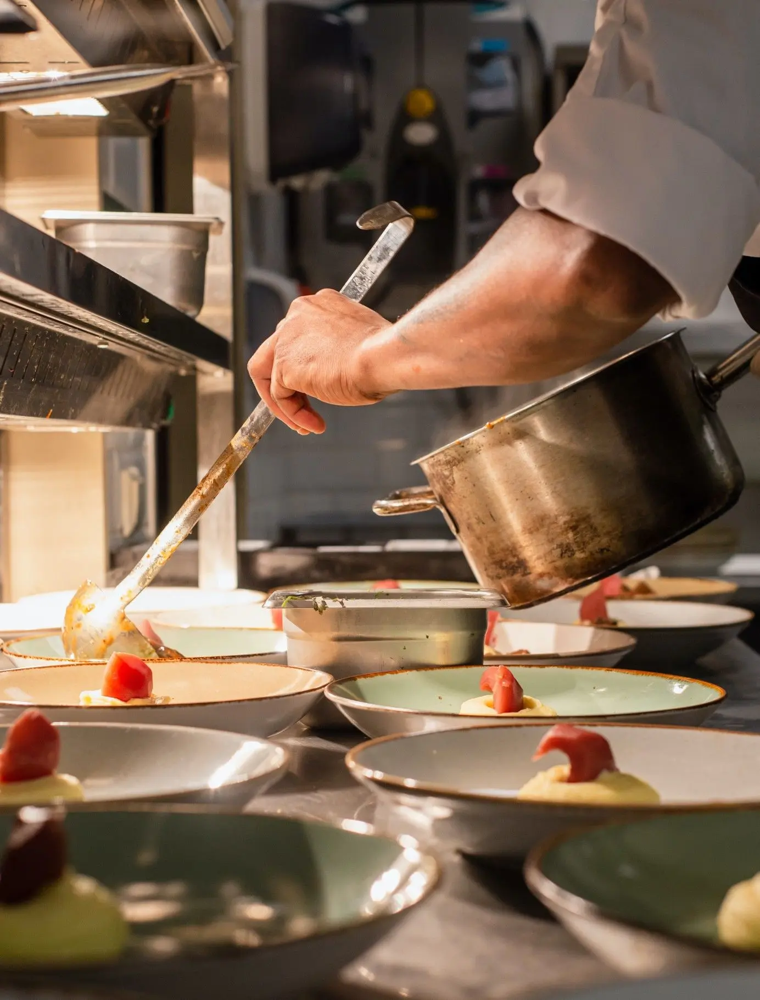

Kerja Kami
Kami adalah sebuah tim yang berdedikasi tinggi dalam memberikan informasi seputar 5 makanan taiwan yang populer. Kami berusaha untuk memberikan informasi yang akurat dan terpercaya kepada para pengunjung kami. Kami senantiasa menghadirkan rekomendasi terbaru, tips menarik, dan ulasan terkini seputar kuliner. Dengan berbagai macam menu yang kami sajikan, kami ingin memastikan bahwa setiap pengunjung dapat menemukan makanan taiwan favorit mereka di sini. Jadi, jangan ragu untuk menjelajahi berbagai menu yang kami sajikan!